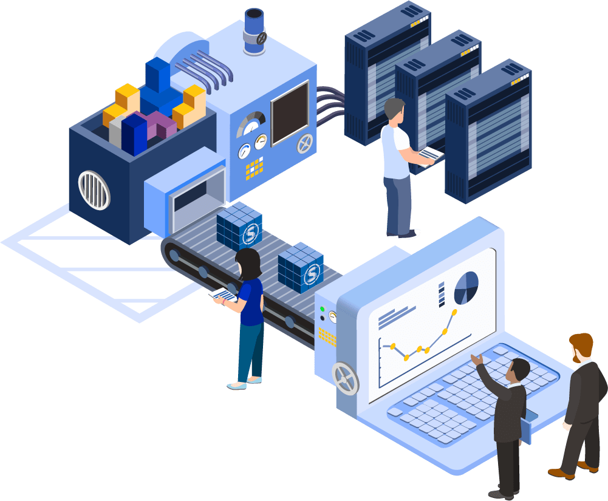
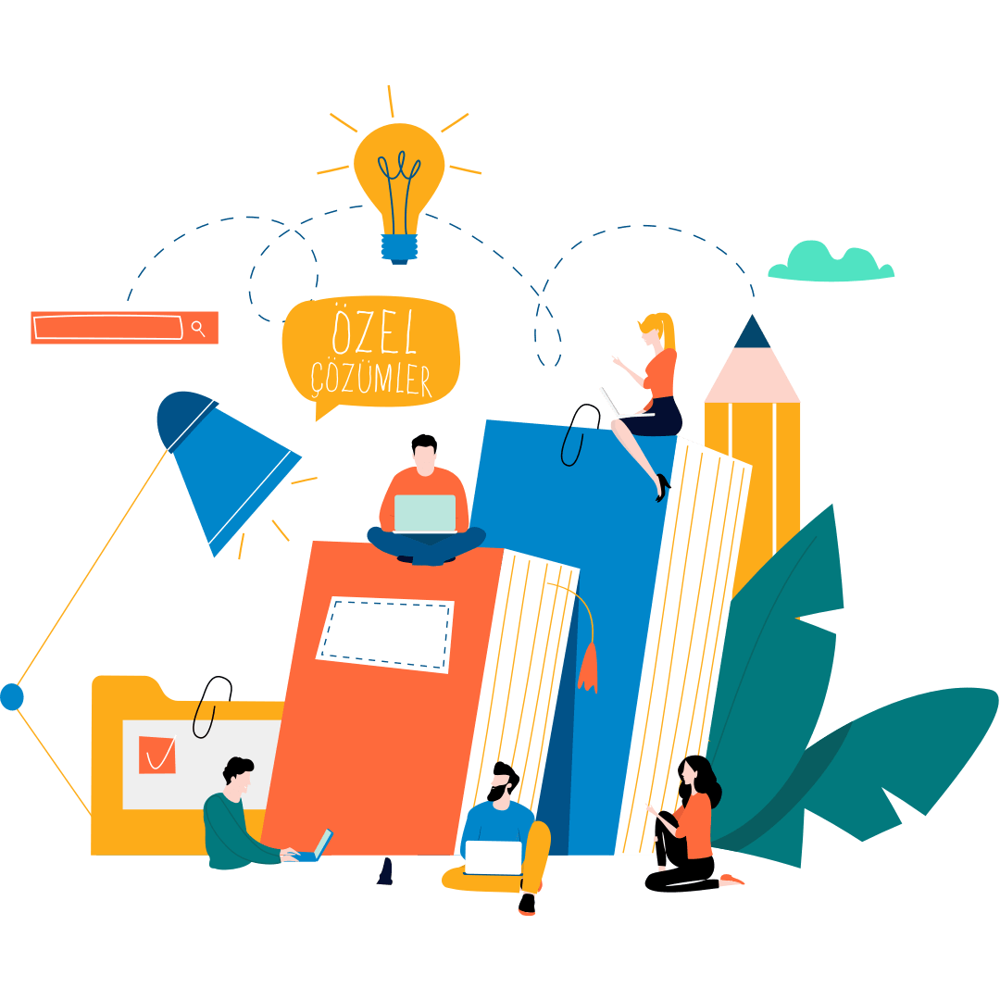

Our Products
NDyo Builds Web Apps Cloud Systems AI Solutions
Explore our range of AI-powered products designed to simplify development, automate workflows, and deliver scalable digital solutions.
Our AI Products
Zylo-ai
Web & App Building AI
Zylo-ai helps users create websites and applications using simple inputs or prompts. It converts ideas into fully functional digital products without coding. Users can customize features and launch quickly with built-in hosting support. It reduces development time and makes creation easy for everyone.
Launch: Q1 2027 (January - March)

Flowra AI
Business Automation AI
This system automates daily business tasks like billing, invoicing, emails, and workflows. It connects different operations into a single smooth process. Businesses can reduce manual work and improve efficiency easily. It helps save time, reduce errors, and scale operations faster.
Launch:Q2 2026 (April – June)

Voxa AI
Voice AI Agent
This AI enables natural voice-based interaction for handling user requests. It responds like a human and can manage customer support queries automatically. The system works in real time and improves communication efficiency. It allows businesses to provide 24/7 support with minimal effort.
Launch:Q3 2026 (July – September)
Eduxa AI
Student AI Assistant
This AI supports students in learning concepts and building projects. It provides guidance, ideas, and solutions in an easy-to-understand way. Students can create projects faster with step-by-step assistance. It makes learning more interactive, simple, and effective.
Launch:Q4 2026 (October – December)
